📘 Guía de instalación
Visual Studio Community 2026 y DB Browser for SQLite. Aprenderá a instalar el programa donde crearemos las aplicaciones de escritorio con Windows Forms, a instalar el programa con el que veremos y crearemos bases de datos, y a comprobar que todo funciona antes de la primera clase.
¿Sin computadora propia? Lea la guía desde el celular y use el centro de cómputo para instalar; mientras tanto, practique con los simuladores y los juegos.
Antes de empezar
Revise esta lista. Si cumple todo, puede continuar sin problema:
- Computadora con Windows 10 (versión reciente) o Windows 11, de 64 bits.
- Espacio libre: al menos 10 GB libres en el disco C: (Visual Studio ocupa varios gigabytes).
- Internet estable: el instalador descarga los componentes mientras instala. Si puede, instale con buena señal o en el centro de cómputo.
- Permisos de administrador: Windows pedirá permiso. Si es una computadora prestada, pida ayuda al propietario.
- Tiempo: reserve entre 30 y 60 minutos para Visual Studio (según su Internet) y 5 minutos para DB Browser.
Instalar Visual Studio Community 2026
Visual Studio es un programa completo (IDE) para programar. Es gratuito en su edición Community para estudiantes. Como nuestro componente es de aplicaciones de escritorio, solo necesitamos instalar la parte de Windows Forms.
Paso 1. Descargar el instalador
- Abra su navegador y entre a visualstudio.microsoft.com/downloads.
- Busque la edición Community (la gratuita) y haga clic en «Descarga gratuita» (Free download).
- Espere a que se descargue el archivo (normalmente
vs_community.exe). Quedará en su carpeta Descargas.
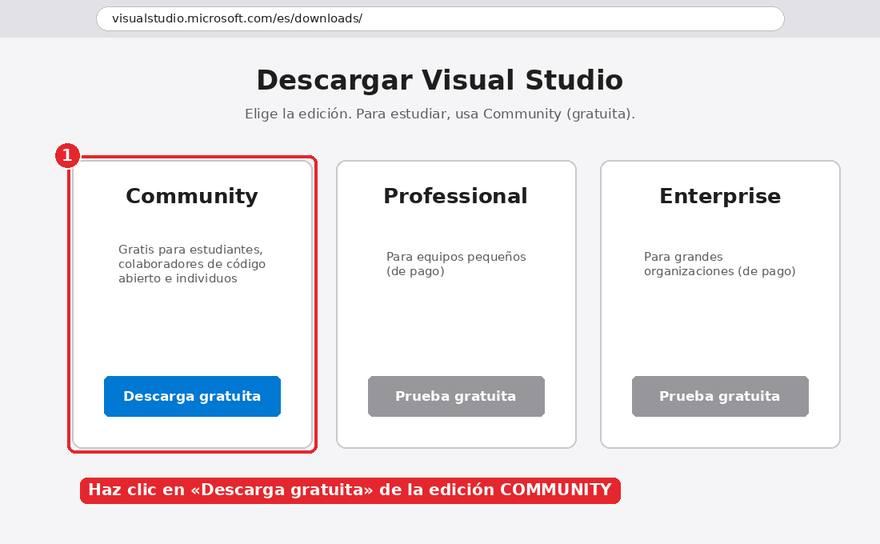
Paso 2. Abrir el instalador
- Haga doble clic en el archivo descargado.
- Si Windows pregunta «¿Desea permitir que esta aplicación realice cambios?», elija Sí.
- En la ventana de bienvenida, pulse Continuar.
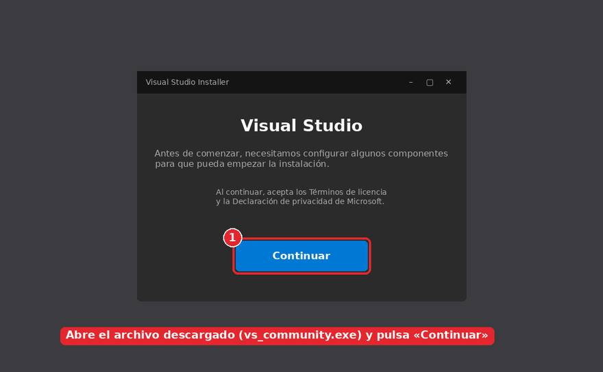
Paso 3. Elegir SOLO lo que necesitamos (muy importante)
Aparecen muchas «cargas de trabajo». Visual Studio sirve para web, videojuegos, móvil y más, pero aquí no necesitamos todo eso: mientras más marque, más tarda la instalación y más espacio ocupa.
«Desarrollo de escritorio de .NET» (.NET desktop development). Incluye todo lo necesario para crear aplicaciones Windows Forms con C#.
Ni desarrollo web (ASP.NET), Azure, C++, Python, Node.js, Plataforma universal de Windows, juegos ni móvil. Si alguna aparece marcada por defecto, quítele el check.
- En la pestaña «Cargas de trabajo», ubique la sección «Escritorio y móvil» (Desktop & Mobile).
- Haga clic en la tarjeta «Desarrollo de escritorio de .NET» para marcarla (verá un check azul ✔).
- Revise que ninguna otra tarjeta tenga el check.
- A la derecha, en «Detalles de la instalación», no cambie nada.
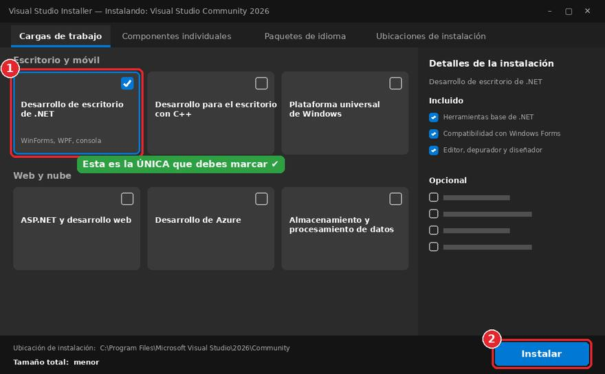
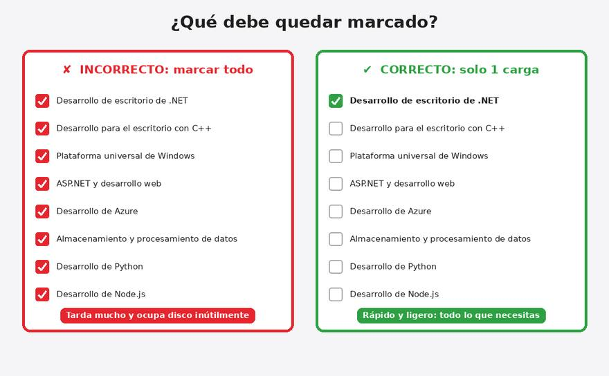
Paso 4. (Opcional) Elegir el idioma
- Vaya a la pestaña «Paquetes de idioma» (Language packs).
- Si prefiere los menús en español, marque Español. Deje también English marcado: la mayoría de tutoriales y errores aparecen en inglés.
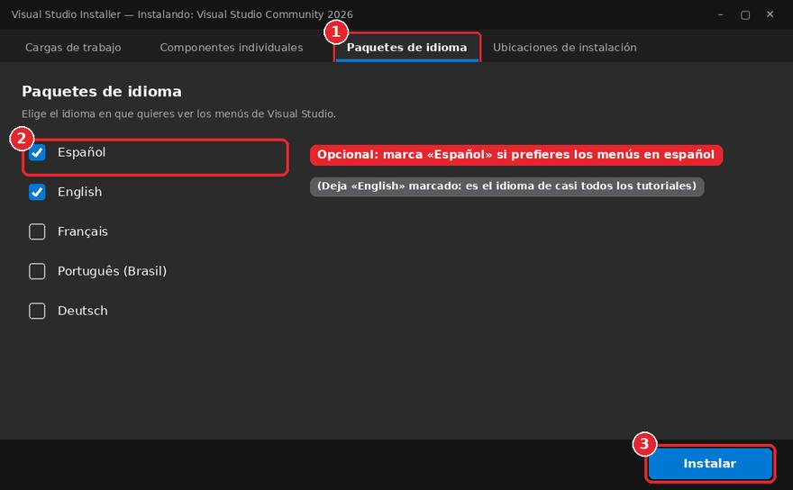
Paso 5. Instalar y esperar
- Revise que abajo a la derecha diga el botón Instalar y haga clic en él.
- Espere a que termine la descarga e instalación. Puede tardar entre 15 y 60 minutos.
- No apague ni suspenda la computadora ni cierre la ventana mientras avanza la barra.
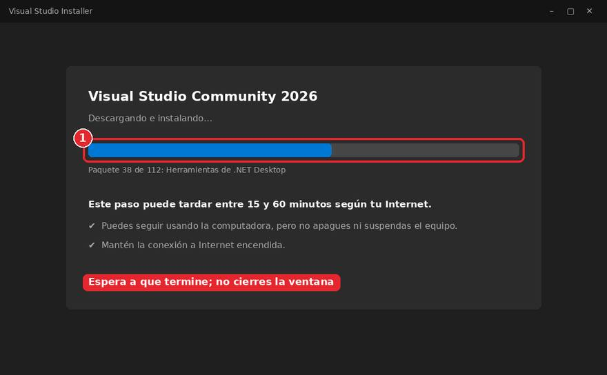
Paso 6. Iniciar sesión
- Al terminar, Visual Studio puede abrirse solo. Si no, búsquelo en el menú Inicio: «Visual Studio 2026».
- Le pedirá iniciar sesión con una cuenta Microsoft (Outlook, Hotmail o la de su institución). Es recomendable hacerlo para mantener activa la licencia gratuita Community.
- Si todavía no tiene cuenta, puede elegir «Omitir y agregar cuentas más tarde», pero deberá iniciar sesión dentro del plazo que indique el programa.
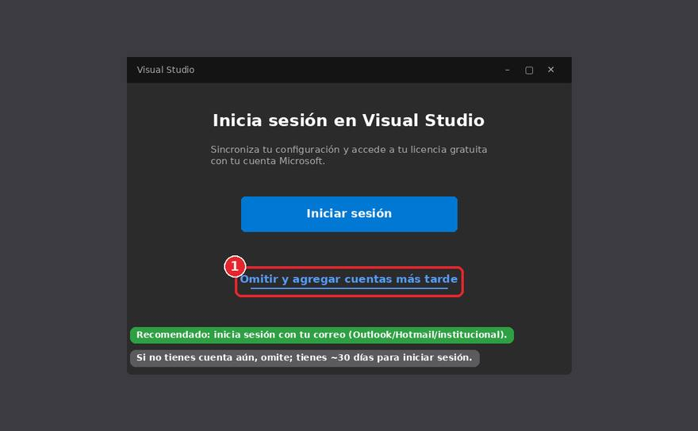
Paso 7. Comprobar que Windows Forms funciona
- En la pantalla de inicio, haga clic en «Crear un proyecto nuevo» (Create a new project).
- En el cuadro de búsqueda escriba
winforms. - Elija «Aplicación de Windows Forms» (Windows Forms App) con el lenguaje C#. No elija la que dice «.NET Framework».
- Pulse Siguiente, póngale el nombre
PruebaInstalacion, pulse Siguiente otra vez y luego Crear (deje el .NET que le proponga). - Cuando se abra el diseñador con una ventana vacía, presione F5 (o el botón verde ▶ «Iniciar»). Debe aparecer una ventana en blanco: ¡funciona!
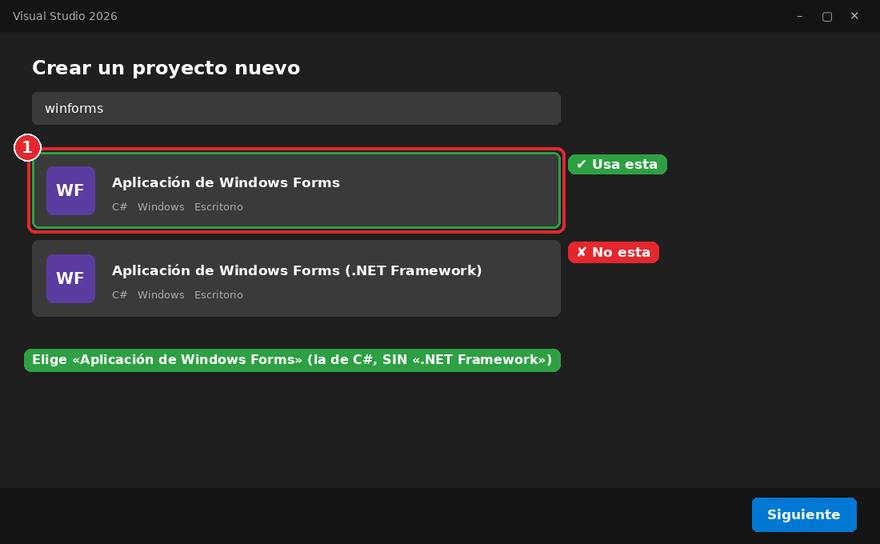
Instalar DB Browser for SQLite
DB Browser for SQLite (DB4S) es un programa gratuito y ligero para crear, abrir y consultar bases de datos SQLite de forma visual. Lo usaremos para ver las tablas y los datos que guardan nuestras aplicaciones.
Paso 1. Descargar el instalador
- Entre a sqlitebrowser.org/dl.
- En la sección Windows, haga clic en «DB Browser for SQLite - Standard installer for 64-bit Windows».
- Si su computadora es muy antigua (32 bits), elija la opción «32-bit».
- Se descargará un archivo
.msi(con un nombre parecido aDB.Browser.for.SQLite-v3.13.1-win64.msi).
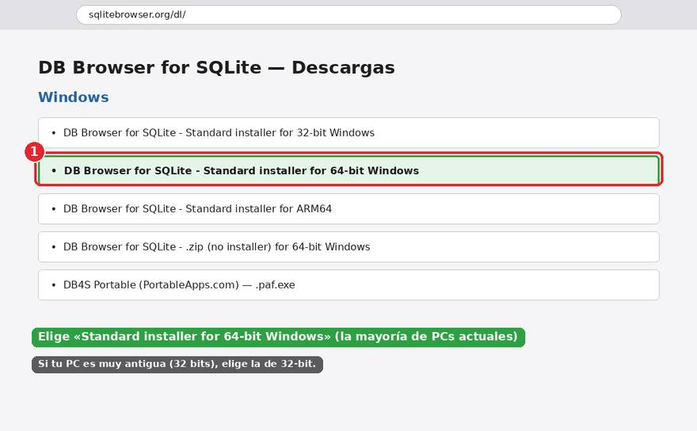
Paso 2. Ejecutar el instalador
- Haga doble clic en el archivo
.msidescargado. - En la primera pantalla pulse Next / Siguiente.
- Marque la casilla «I accept the terms in the License Agreement» (Acepto los términos) y pulse Next.
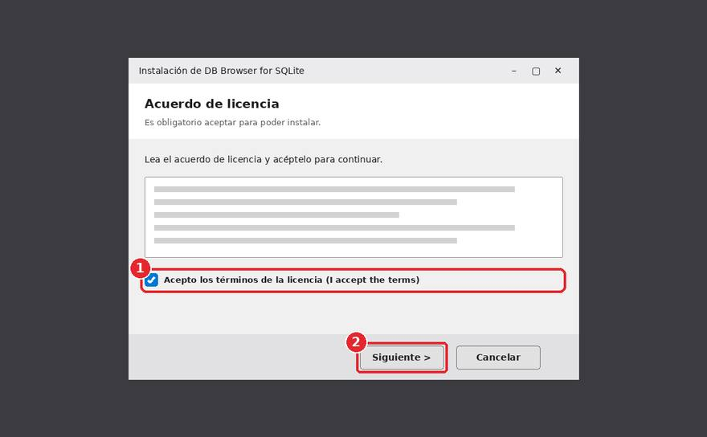
Paso 3. Accesos directos
- Deje marcados Desktop (Escritorio) y Program Menu (Menú Programas). Así podrá abrirlo fácilmente.
- Pulse Next.
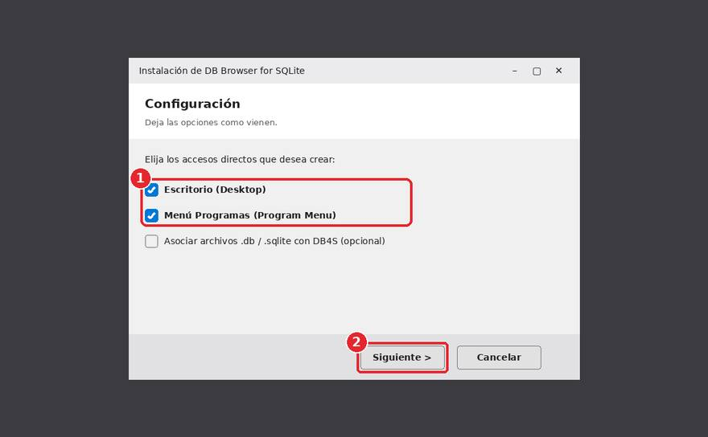
Paso 4. Instalar
- Pulse Install. Si Windows pregunta si permite cambios, elija Sí.
- Espere unos segundos y pulse Finish (Finalizar).
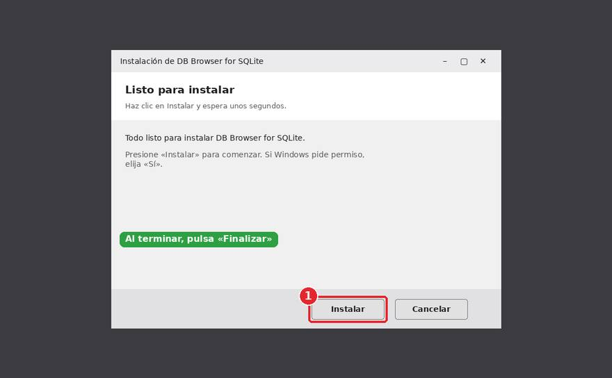
Paso 5. Abrir el programa y comprobar
- Abra DB Browser for SQLite desde el acceso directo del Escritorio o desde el menú Inicio.
- Debe ver la ventana con las pestañas «Estructura de la base de datos», «Hoja de datos» y «Ejecutar SQL». Si la ve, quedó instalado correctamente.
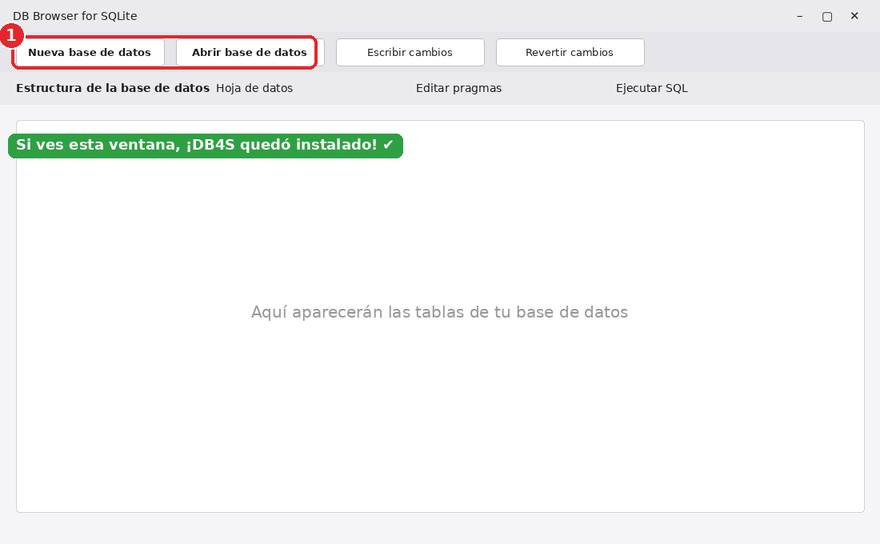
Lista de verificación final
Marque cada punto; su avance se guarda en este navegador.
Problemas frecuentes
| Problema | Qué hacer |
|---|---|
| El instalador se queda detenido o falla la descarga | Revise su Internet, cierre y vuelva a abrir el instalador; continúa donde se quedó. Evite instalar con datos móviles inestables. |
| Dice que no hay espacio en disco | Libere espacio en el disco C: (al menos 10 GB) borrando archivos temporales o programas que ya no use. |
| No encuentro «Windows Forms» al crear el proyecto | Abra Visual Studio Installer → Modificar → marque «Desarrollo de escritorio de .NET». |
| Windows muestra una advertencia al abrir el instalador | Verifique que lo descargó desde las páginas oficiales de esta guía y elija «Sí» o «Ejecutar de todos modos». |
Si se queda atascado, tome una captura de pantalla del mensaje y llévela al encuentro o envíela al grupo de WhatsApp.